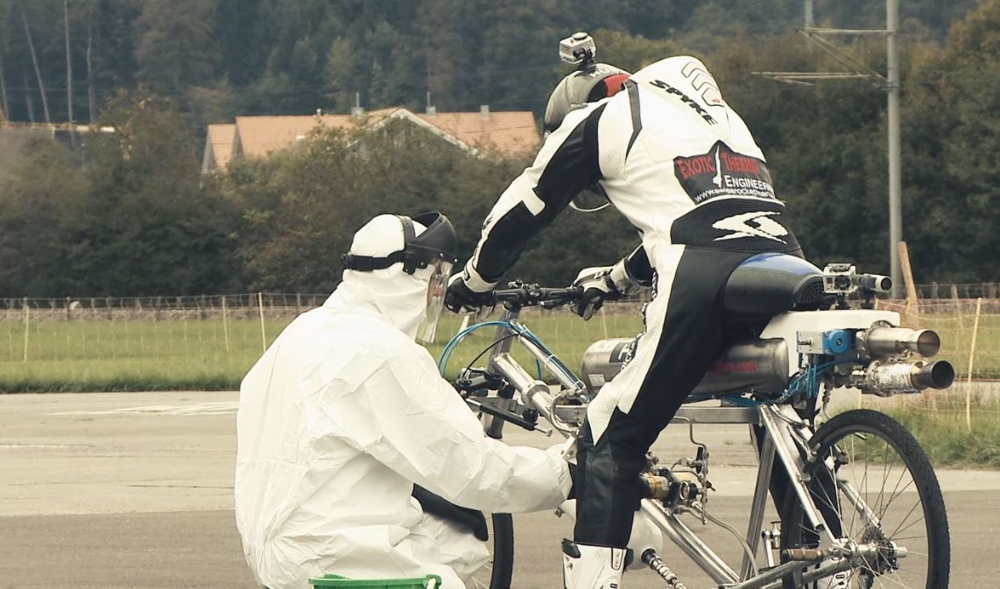
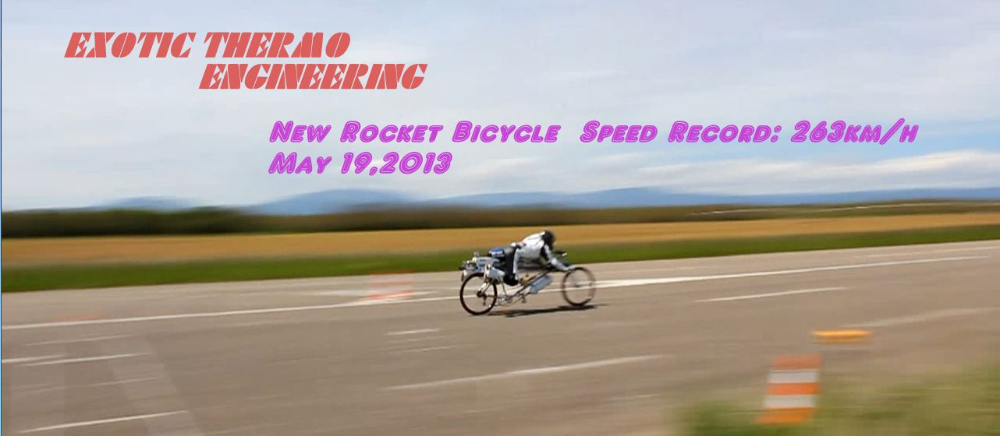
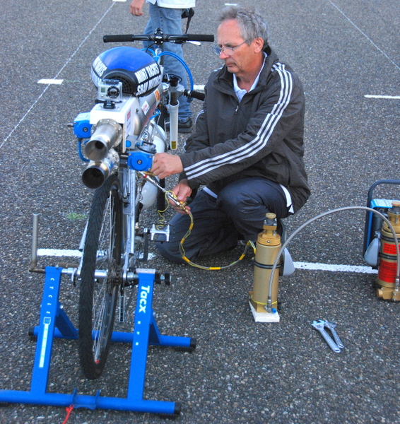
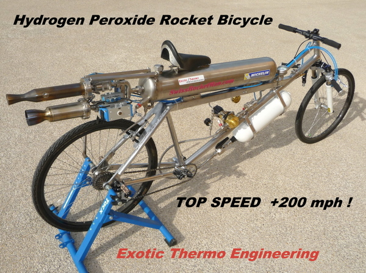
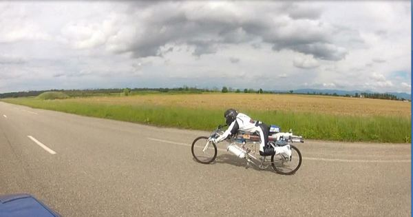

Grâce au soutien de Hublot Genève, nous avions rendez-vous ce lundi 7 octobre 2013 sur l’aérodrome d’Interlaken pour une nouvelle tentative de record de vitesse à vélo-fusée.
La piste très courte (790 mètres exploitables) a tout de suite ajouté une difficulté supplémentaire à la mission du jour. Un premier run d’essai à 175 km/h a confirmé que tenter de dépasser les 263 km/h réalisés le 19 mai 2013 sera véritablement très délicat. En raison des 600 mètres manquants (!!!) par rapport à la piste de Munchhouse, il était certain qu’il ne sera pas permis de perdre un seul instant et que dès que la phase de propulsion cessera, il faudra immédiatement saisir les freins du vélo en essayant d’en exploiter le maximum…….c’est à dire pas grand-chose ! Car là on ne compte pas sur des freins à disques surdimensionnées tels que sur les supercars ou motos modernes, mais sur 4 petits morceaux de caoutchouc…
Réservoir rempli au maximum (12,5 litres de H2O2 à 86%), pression ajustée, concentration au maximum, puis mise en marche de propulseur. La montée en vitesse est rapide, les aspérités de la piste produisant de très fortes vibrations et chocs inconfortables, la force de vent se faisant de plus en plus intense…. Le vélo se déporte sur la gauche mais le pilote ne coupe pas les gaz, mais peu de temps après le vent relatif devient si puissant que sa tête est tirée en arrière avec une force telle que seul le contact du casque sur le bossage aérodynamique de la combinaison parviendra à limiter l’hyperextension.Heureusement, le réservoir est totalement vidangé très peu de temps après, et bien que cette brève mésaventure ait paru durer bien longtemps pour le pilote, il n’a toutefois pas interrompu la poussée…
Eh oui, il n’était pas venu pour gaspiller ce précieux peroxyde d’hydrogène mais pour faire tomber le chrono ! Aussitôt la phase de poussée terminée la décélération est rapide (environ -1.5g à la vitesse maximale atteinte), ce qui est une bonne chose lorsqu’on pense aux rudimentaires freins à patins équipant ce vélo… Se déplaçant alors à non moins de 79,2 m/s, c’est une aide précieuse que de pouvoir compter sur ce vent intense pour ralentir, surtout lorsque l’on sait qu’il reste à peine un peu plus de 400 mètres devant soi pour s’arrêter !!! Cependant survient une petite frayeur supplémentaire pour le pilote, car tandis que le bout de piste s’approche dangereusement vite, il ne parvient pas à lever immédiatement les doigts pour les placer sur les leviers de freins en raison de la forte pression aérodynamique. Plus d’une seconde, ce qui parait une éternité sur le moment, est perdue jusqu’à la prise des freins. Puis s’en suit une longue phase de freinage où les freins V-brake sont à l’agonie…..mais parviennent tout de même à ralentir le svelte engin jusqu’à l’arrêt. La piste aura été utilisée jusqu’au dernier mètre… Les vibrations furent si puissantes que l’axe de roue arrière s’est totalement desserré, et une pièce, heureusement sans grande importance, a disparu entre le départ et l’arrivée !
C’était limite mais l’essentiel est d’avoir rempli l’objectif. L’incroyable vitesse de 285 km/h a été atteinte en seulement 6,7 secondes ! Le quart de mile départ-arrêté a été parcouru en 7,3 secondes environ !!! Pas mal du tout pour unebicyclette, certes fortement dopée !
Vitesse maximale atteinte (GPS 10Hz) : 285 km/h (177.13 mph)
Durée de propulsion : 6,7 secondes Quart de mile départ-arrêté (402,33m) : 7,3 secondes Longueur de la piste : 790 mètres Poussée du moteur-fusée durant le run : 3.04 kN / 310 kgf / 683.4 lbf Soit une puissance de 240,75 kW (327 chevaux) produite à la vitesse de 285 km/h. Ingénieur : Arnold Neracher Pilote : François Gissy


Ce nouveau vélo-fusée
a été construit durant l’année 2012. Par rapport au précédent vélo (Kamikaze),
le but était d’optimiser la position du pilote, à la fois pour limiter la prise
au vent, mais aussi afin de pouvoir tenir une forte accélération, et ceci
depuis l’arrêt, pieds au sol, sans avoir à initier la prise de vitesse en
pédalant. Pour cela il était nécessaire de fortement diminuer la hauteur de
selle par rapport au précédent vélo, afin de pouvoir poser les pieds au sol de
manière stable. Le fait de pouvoir démarrer rapidement depuis l’arrêt permettra
aussi d’utiliser ce vélo sur des pistes de drag racing

La
construction de ce vélo ne fut motivée que dans un seul objectif : rouler
encore plus vite qu’auparavant !
Objectif
réussi : le 19 mai 2013, une vitesse de 263 km/h a été atteinte sur une
ancienne piste militaire située à Munchhouse, dans le nord-est de la France par François Gissy.
Cet exploit est d’autant plus impressionnant car il faut tenir compte que cette
piste était étroite et dans un état relativement dégradé.
Si
une opportunité se présente, notre objectif sera d’essayer de franchir la barre
des 300 km/h avec ce vélo. Par la même occasion, nous en profiterons pour
installer un nouveau propulseur produisant beaucoup plus de poussée, de manière
à rendre cet engin encore plus démentiel !
Concepteur : Arnold Neracher Pilote : François Gissy
Remerciements :
Gregory and Jean-Marie Arnold MINTYACHTS La vega s/n, 11380 Tarifa (Cádiz), Spain http://www.mintyachts.com/
Sbay Motor Co Sbay Motor Company is a company dedicated to the design and fabrication of big twin motorcycles; Awarded of the AMD World Championship 2010 title in the Production Manufacturers class. Based in Sotogrande - Cádiz – Spain http://www.sbaymotorco.com/
COMERA (mécanique générale de précision) 95 rue Général de Gaulle ; 68470 Ranspach ; France
Au Fil Enchanté (broderies personnalisées) Pavillons des Créateurs n°5 ; 68470 Fellering ; France
RC Prestige - Patrick Cornus http://www.rcprestige.fr/
Un grand merci au Conseil Général du Haut-Rhin pour la mise à disposition de la piste. http://www.cg68.fr/
Merci à toutes les personnes ayant contribuées d’une manière ou d’une autre à la réalisation du projet.


Ici il dépasse la SUBARU qui roule après 100 mètres à environ 120 km/h
et François dépasse par la droite la voiture à plus de 260 km/h ! ! François
aimerais que je lui construise un propulseur 2 fois plus puissant pour
ce mesurer pourquoi pas aux motos dragsters
........................................rendez-vous en 2014